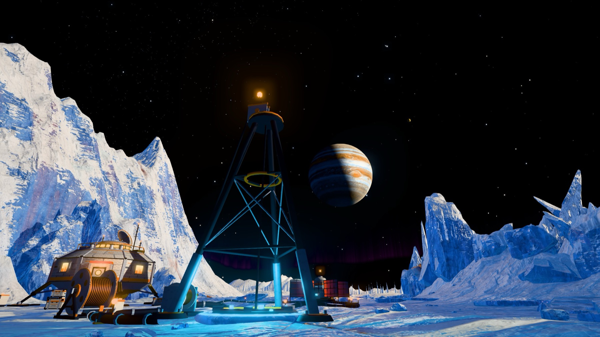
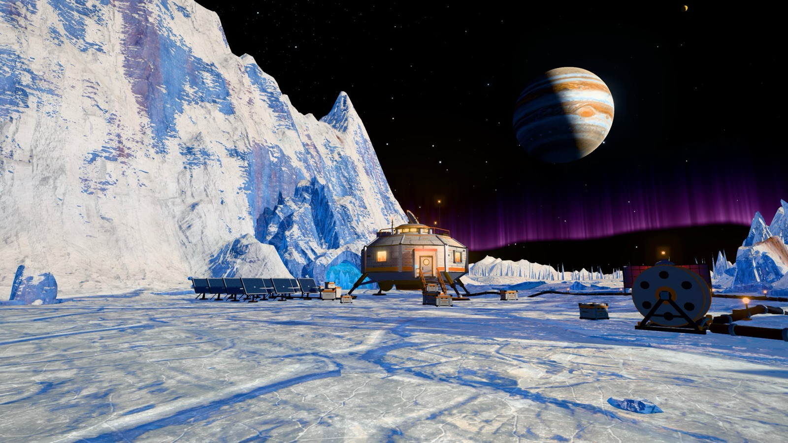
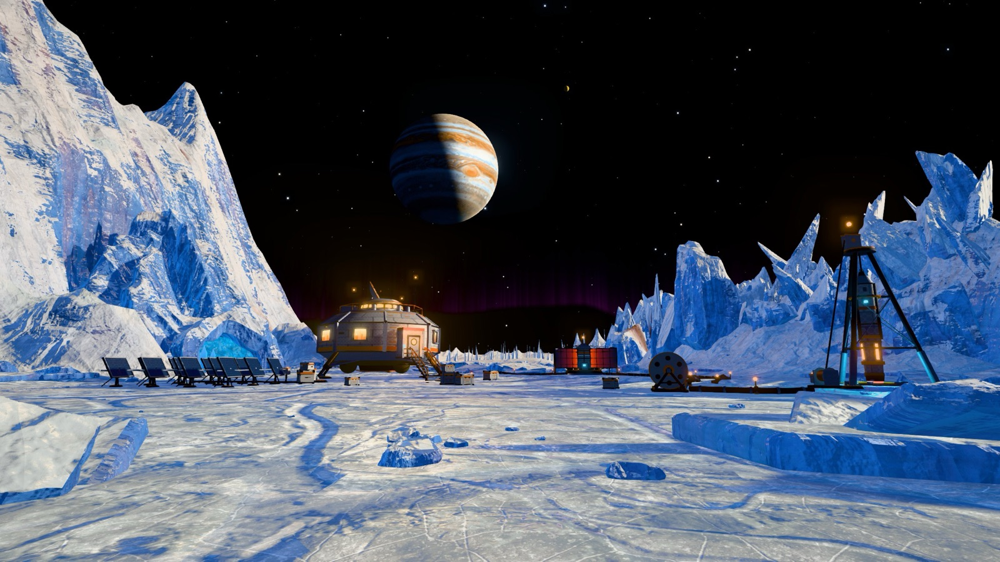
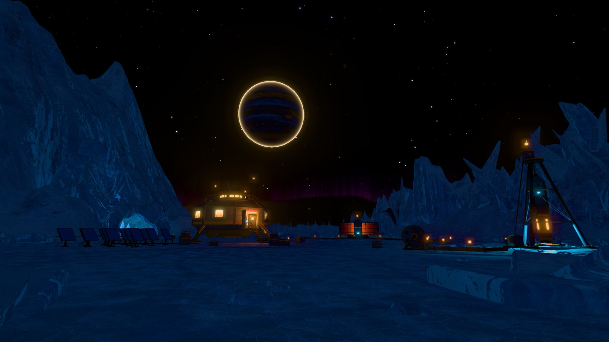
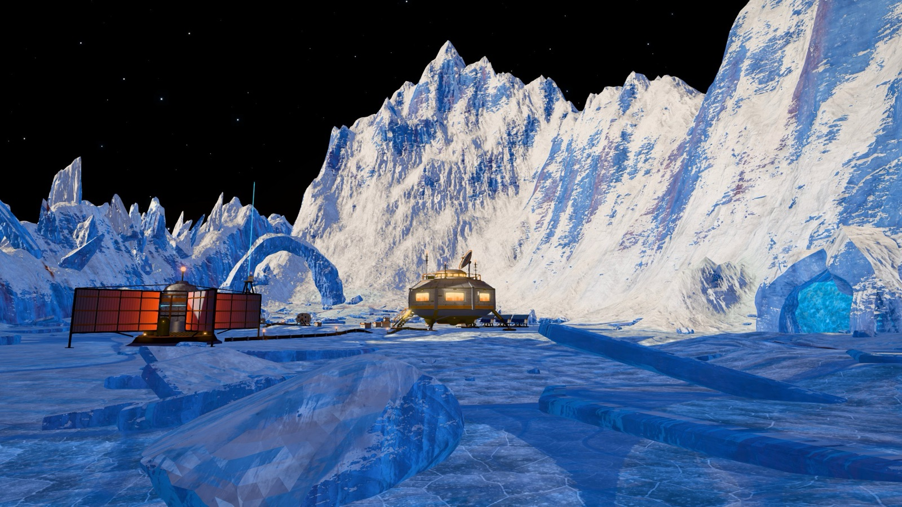
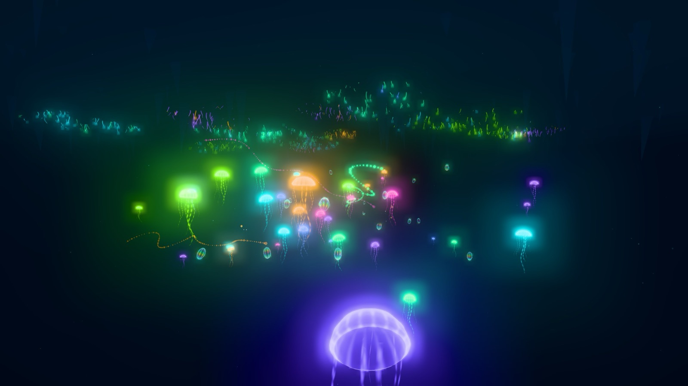

A pocket of salty water
- Take a sample. A clue about life, but the dig stops and the hole partly freezes.
- Steer round it. Costs a fifth of the battery. No clue.
Real: scientists think salty water may sit in pockets inside the ice.
NASA Space Apps Challenge 2026 · Junior Astronaut Mission Trainer
Melt through 29 km of ice. Keep your crew going. Every choice costs something.
Plays in the browser. No download, no account. Keyboard and mouse. Ages 7 to 12.
The mission
You are the astronaut. You walk around a small base on Jupiter’s moon Europa, in first person. Under your boots, scientists are almost certain, is an ocean with about twice the water of all Earth’s seas. Your cryobot can melt a hole down to it, if you can keep it going.

The cryobot melts its way down through the ice. A real one would need about three years; ours is sped up.
Three things to watch
The challenge asks for two or three core resources, not six. These three pull against each other, so helping one always costs another.
Sunlight fills it, slowly. The dark drains it, and most of a mission is night.
Several problems can be solved by spending it. There is not enough for all of them.
Outside you get cold. Inside you warm up, but only if the reactor’s power goes to the heaters and not to the dig.
It only goes up: fastest outside, slower behind the habitat’s walls, slowest in the ice cave. When it is full, the crew is called home.
So waiting is never free.
Seven situations
Each situation has two or three ways out, and every one of them has a price. Which is right depends on the state of your base at that moment, so children work it out instead of remembering an answer.
Real: scientists think salty water may sit in pockets inside the ice.
Real: Jupiter is 12 degrees wide in Europa’s sky, and the Sun takes about 3 hours to pass behind it.
Real: NASA’s Galileo data point to ammonia near Europa’s cracks.
Real: NASA’s Juno team rescued a radiation-damaged camera near Jupiter by heating it.
Real: Europa crosses Jupiter’s plasma sheet about every 5.6 hours. The glow is ultraviolet; the game shows it in false colour and says so.
Real: Europa’s tide grinds its faults sideways, slowly, every day.
Real: salt layers slow a cryobot; real designs carry water jets and cutters.
The world
A black sky with no haze, because Europa has no air. Hard shadows. Jupiter at its true size and phase, fixed in the sky. Europa’s own whitish ice and red-brown salt lines, pushed brighter but not replaced.





The ending
Break through, and a submersible rides down the hole. The more clues about life you risked collecting on the way, the more there is to find.
Imagined No life has been found on Europa. The creatures are modelled on real deep-sea animals that make their own light, and the game says so on screen.
NASA data
The data is not decoration. It sets the goal, the clock, the power you get and the dangers you meet. Each source is credited inside the game.
Honest about the science
A game for children must not teach something false about a real place. So everything imagined is labelled: here, and in the game’s own “What’s real?” panel (press I while playing).
How it was made
The terrain, the ice, the sky, the ocean creatures, the suit’s sounds and the music are all generated in code.
The idea, the setting, the mechanics and the story are the author’s own.
Claude (Anthropic) wrote the code under his direction, gathered and summarised the NASA sources, and drafted the on-screen wording and this page.
The narrator is an AI voice (ElevenLabs), noted in each audio file. No AI-made images, 3D models or textures are in the game.